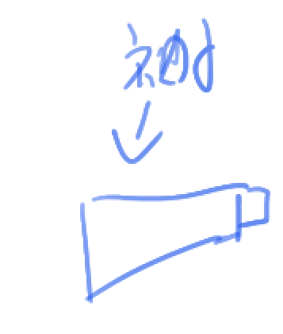
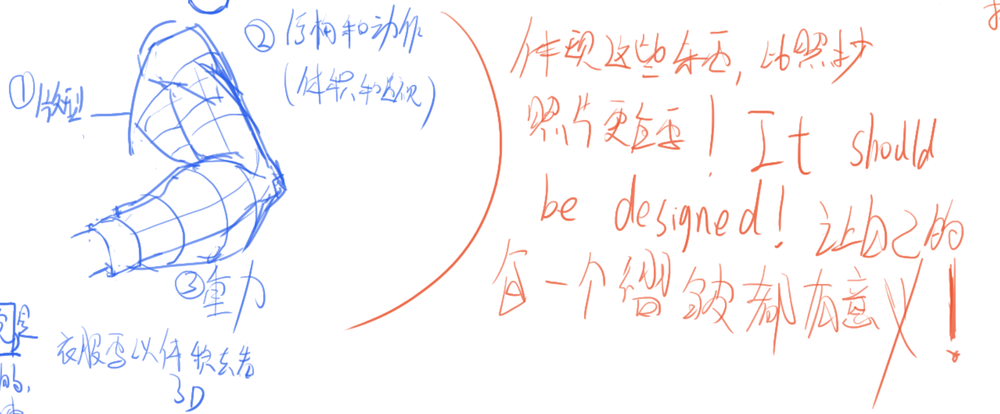
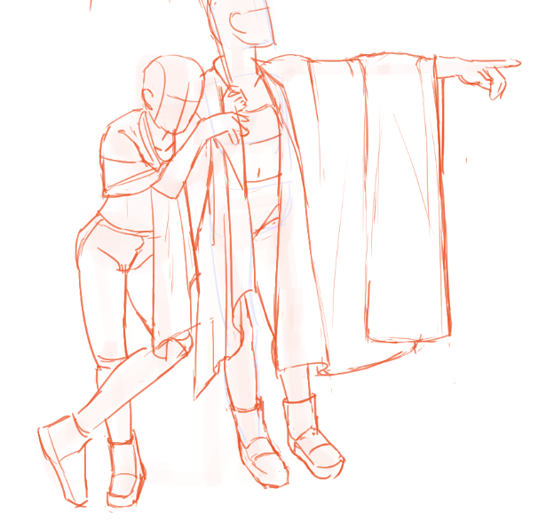
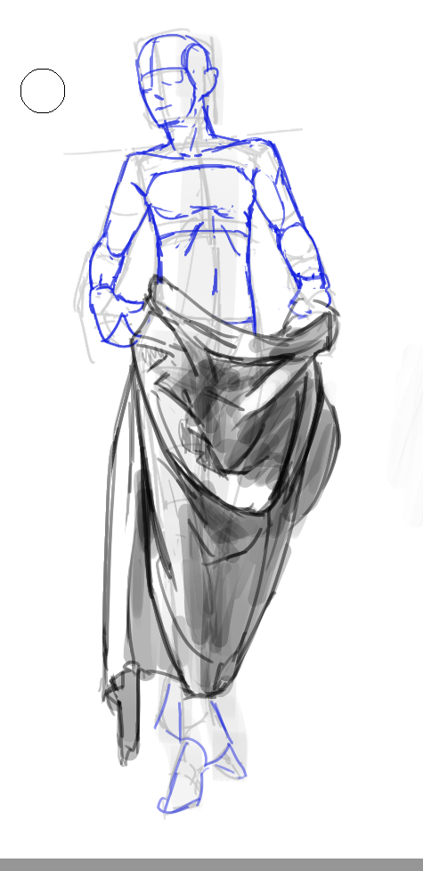

毛厂速写团练第三周笔记
最后一天做毛厂的时间是 2025-10-29，我后面确实是断掉了……我将来可能会补上吧，我确实获得了很多东西了。
芜湖。
第三周讲褶皱，我最期待褶皱。考虑到我将来画着衣人体将比裸体多很多，要明白褶皱的各种小九九是非常重要的，甚至比肌肉更重要。而褶皱的自由度也是比肌肉更高的——实际上只要你大形控制好（大形来自于褶皱之下的结构），后续的小的细节时完全可以随你设计的。
实际上，在学习褶皱时，最忌讳的就是追求褶皱表面的细节，去照抄参考，这可以说是反美术的，美术要思考，取舍，主观判断，copy是降智行为）。学习褶皱，最重要的是追求理解其原理（垂，拉，堆），仅把参考当作参考，以褶皱之下的结构为根据去创造，去设计自己的画面。总之，不要在乎褶皱本身，而是为了画面，为了表达（褶皱之下的身体结构，动态，力……）去绘制褶皱。
上面其实就是写，褶皱是结构、力的结果，我们要通过原因去自己发现结果，而不是只盯着结果本身。
（这里把“原因”这个词泛化成“心智模型”了，这个泛化其实有点牵强，但意思到了就行）其实画人体也是如此——我们脑子里对人体的心智模型是因，我们是去从人体的心智模型出发，想象这个姿势下的画面并将它落实到纸上，而非是照抄模特身上的肌肉线条。
重点是理解——模特是现实世界给我们的结果，它的作用是帮助我们从结果反推原因，即修正我们脑子里的心智模型，而非是让我们去照抄。
D01
画画要放松，不要有负担，开心地画。
侧脸的立体感，嘴唇部分最重要。
衣褶vs布褶，衣褶是为人服务的，要体现其下的东西，即人体。
总之，衣褶同样是幻觉（就像画面中的人也是幻觉），是出于特定目的的——暗示其下的人体。
注意袖子的形体，并非长条，而是下面更宽！

衣服的版型；人的结构和动作；重力。体现它们最为重要，而为了体现它们，去设计褶皱，让自己的每一个褶皱都有其意义。（不如说其实是从这些东西出发了！）

注意，注意，注意——边缘的衣褶（即轮廓）比里面的更重要！但或许这里不能只说是轮廓，该说是一级形吧？而我猜测，头发同样如此。
另一个好奇的部分——是否头发也可以理解为褶皱？有可能不应该统一因为头发的个性可能更大……更厚，更有弹性？
画褶皱时要把握（疏密的？面积的？）节奏，比如这幅画里躯干、大臂、小臂上的褶皱的量有多-少-多的关系。这种节奏当然原图是没有的，是我们主观选择的。

注意高点——顶起来衣褶的地方。
衣褶流向的改变，如从躯干到大臂，大臂到小臂，可能有角度，比如屈肘，向前抬手等，这时候就会堆起来——就像衣褶撞上了这个转折。
结构最重要，想好衣褶的结构，具体的衣褶反而不重要。以所有高点，去明确褶皱的大形，然后后面就都是玩儿了，怎么漂亮怎么来。
堆，垂，拉，褶皱最基础的就是这三大类。
关于风，应当认为风有形体——风吹衣褶就是衣褶搭在风的形体上，显然风更强，布越软，则这个形体体积越大，越对整个布料的形状起作用。
D02
今天的我没看，因为老师的画法无法参考。
D03
我在想，对于一个复杂的衣褶，可以去使用分治进行思考——先把每一对关系都给它画出来，再用感性把它们合并，整成漂亮的形状，比如对下面的复杂衣褶：

注意到，右手，腰，大腿，左手都是高点，造成一个复杂褶皱。这时候就：
- 腰和左手之间，是一个垂和拉的关系
- 右手和左手之间也是一个垂和拉的关系
- 腰和手之间有堆
- 大腿外侧有一个垂
- 大腿和左手有一些微妙的垂（大概可以无视）
用各种线条去表现这些关系，然后把它们合并起来，作为一级形，然后后面再随感觉去添加细节……大概是这个路子。
衣褶就是衣褶下的人。
注意到老师将大转子和髋部合并去看待，形成一个梯台状，我认为这个简化在概括人体时很有意义，但脑子里也要清楚这概括下面的底层，实际的形状。所以，这不是抽象层，而是拐杖，是模式……
这周要分块看，要有层次关系，要保留那些能够强调底下的人体的衣褶。
对头的难画的角度，重点是其观察方法——先定出球的经线。
肩胛骨，锁骨，肱骨，它们三者是联动的，应当一起看待。
关于控笔——放轻松，手离笔尖远一些。然后，不要单独去练控笔——多画！
对褶皱，其实分出大趋势就基本结束了！先去关心大的部分——大的就是整体，不要钻进细节。
分出大趋势后就是做细节了，关键是控制疏密，设计叠压。
这么看来，褶皱是也是逐步细化出来的，先定出大概大形（这一步来自于心智模型，更理性）然后就开始主动设计，让它不断进化，逼近到所需。
本博客所有文章除特别声明外，均采用 CC BY-NC-SA 4.0 协议 ，转载请注明出处！